知識は集めた。でも、なぜかクライアントに響かない。 あなたに必要なのは、もっと知識を足すことではなく、「なぜ」を伝える力だ。 治す人ではなく、気づきを広げる人になる。

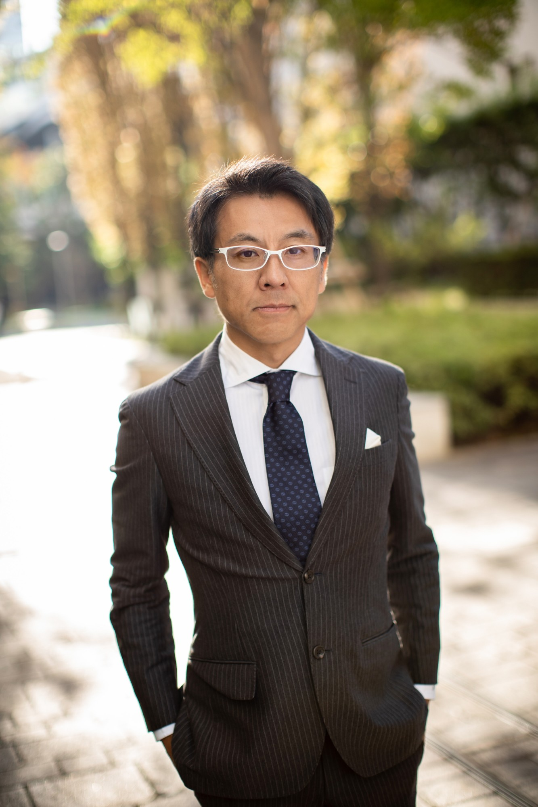

病院に行っても「異常なし」。血液検査はオールA。でも疲れやすい、眠れない、イライラが止まらない。「加齢のせい」「性格のせい」と諦めてきた人が、あなたの目の前にいる。
あなたは気づいている。この人たちに必要なのは、薬ではなく「なぜ」だと。
でも同時に、こうも思ってきた。「自分は医師じゃない。診断も治療もできない。だから何もできない」と。
それは違う。医療の入口を作る人がいなければ、そもそも誰も治療にたどり着けない。 気づきを広げ、生活習慣の土台を耕し、必要なら専門家につなぐ。それは、治療と同じくらい尊い役割だ。
「治す人」ではなく「気づきを広げる人」。この線引きは、制約ではなく、あなたの武器になる。
診断も処方もしない。それでも、あなたが「なぜ」を伝えることで、一人の人生が動き始める。


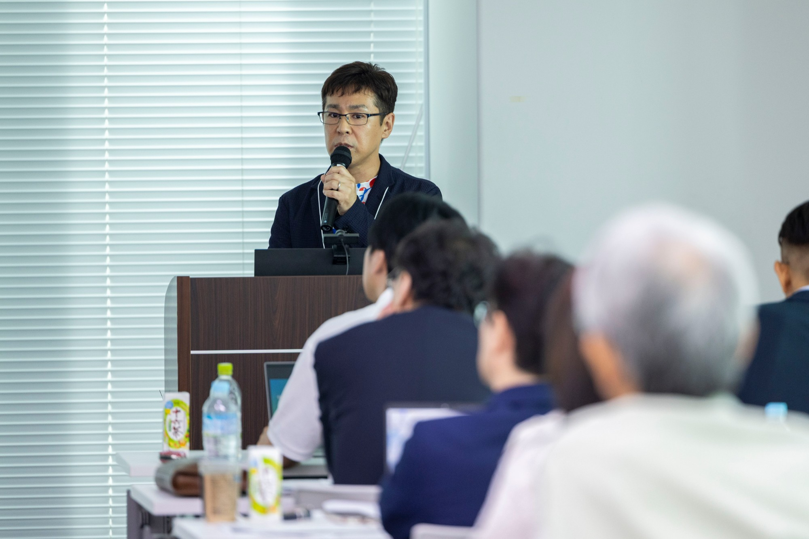

※ 本会は医師法・医薬品医療機器等法を遵守。検査データを用いた診断は医師のみが行える医療行為です。この線引きを守るからこそ、栄養療法は健全に発展していきます。医師以外の方は、法令に抵触しない範囲で知識を活かします。
根本原因の思考と、生活習慣という「一番動かせる領域」。ここがあなたの戦う場所だ。
「足りないから足す」ではなく「なぜ足りなくなるのか」を伝える。栄養不足は原因でなく結果。
血糖の安定（4F・補食）、運動、睡眠。あなたが最も動かせて、最も喜ばれる領域。
依存させず、卒業を目指す。「一生飲んでください」と言わない。ゴールは"いらない体"。


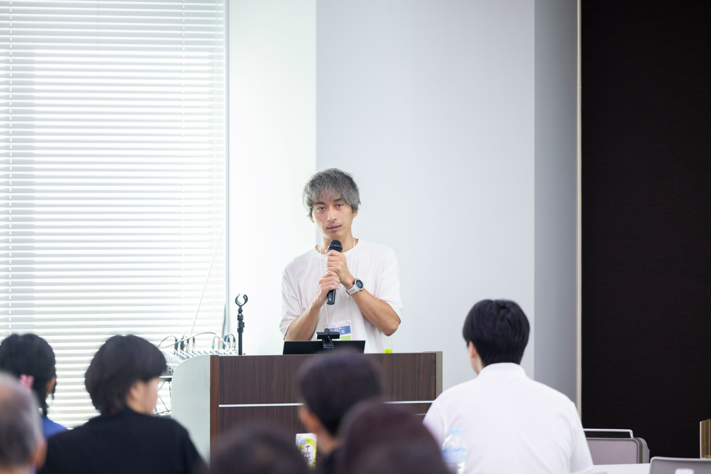


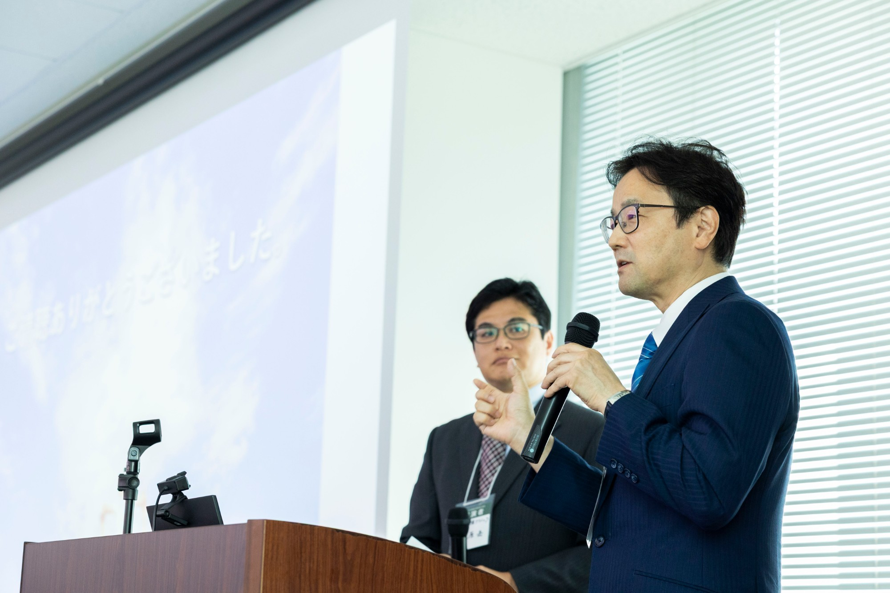

根本原因が体にダメージを与え、その結果として栄養が消耗する。だから補う。ならば、原因が消えればサプリは要らなくなっていく。あなたが伝えるのは、この"卒業"への道筋だ。


全員がそうなると約束はしない。だがそこを目指すからこそ、支援はうまくいく。目指さなければ、原因は放置され、サプリは増える一方だ。
| Before | After |
|---|---|
| ネットの断片情報を寄せ集めていた | 点と点がつながり、順序立てて説明できる |
| クライアントに「なんとなく」しか言えない | 「なぜそうなるか」を伝える説得力がつく |
| 心理・施術だけで限界を感じていた | 栄養的な背景を加え、アプローチの幅が出る |
| 資格・肩書き迷子（何から始めれば？） | 自分の役割が定まり、開業・発信へ踏み出せる |
| 自分の不調を「性格のせい」と責めていた | 体のSOSと理解し、自分がまず回復する |
| 「治す資格がない」と動けなかった | 伝道者として、人生を変えるきっかけを渡せる |

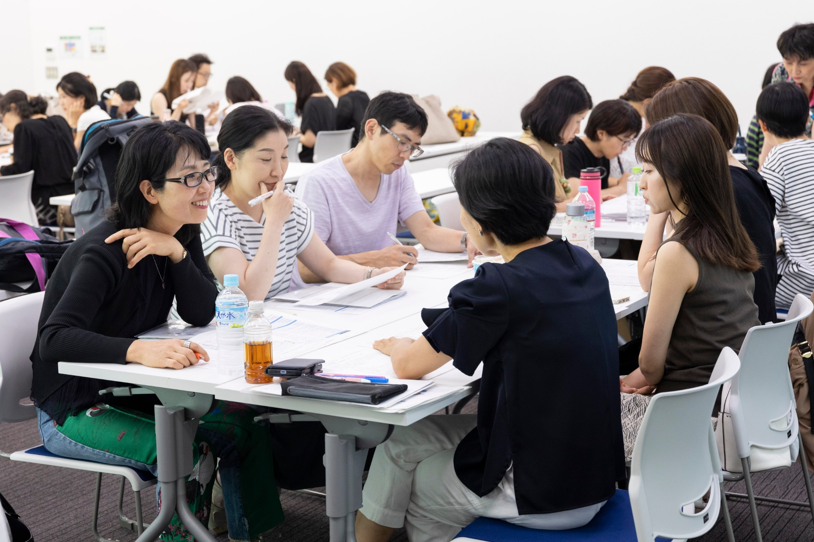


体感が、最初の"実績"になる。伝えたい気持ちが自然に芽生えてくる。
改善に喜ぶ人が増え、開業・単価・満足度に直結する。仕事がもっと楽しくなる。
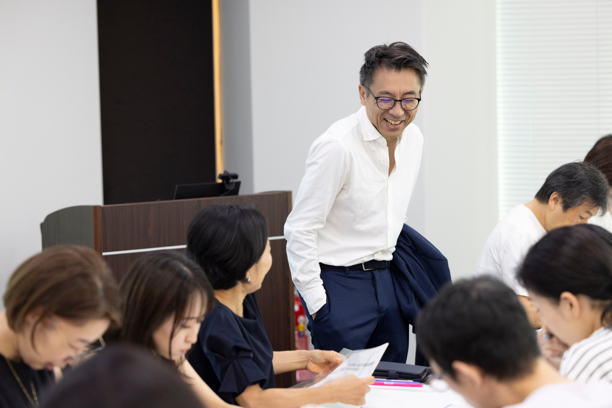
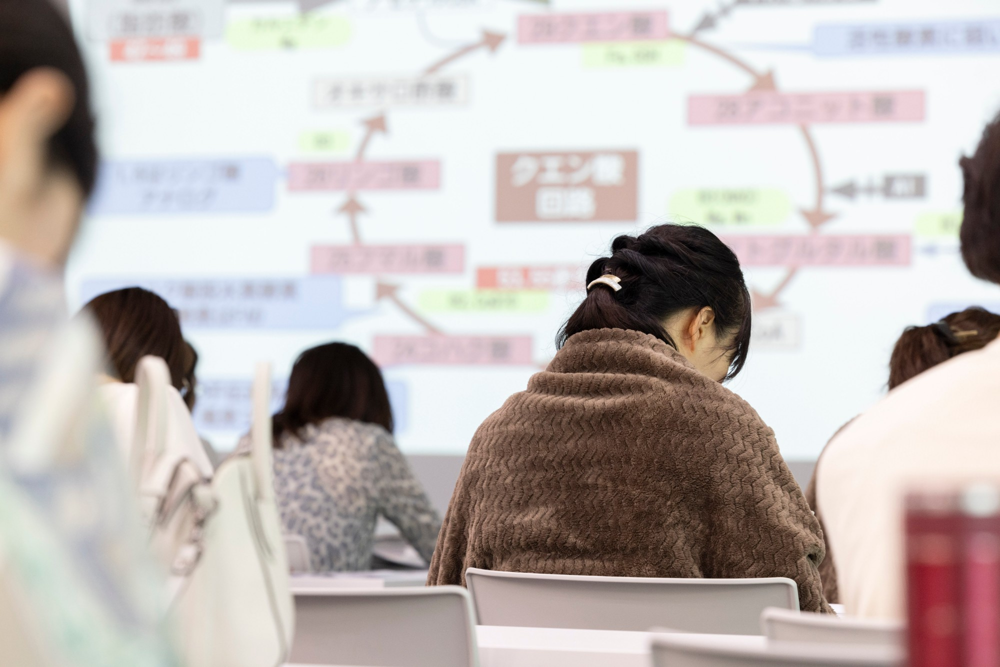


栄養療法AI：検査結果を分子栄養学的に解析し、全講義内容を統合したナレッジベースを搭載。まず自分の体で実践しながら学べる。自分が変わった体感こそ、あなたが伝える最大の説得力になる。
遺伝子検査キット GENE PROFILE（定価55,000円・先着50名）：MTHFR・COMT・DAO・APOE4など。読み方と活用法を講義で解説。
※ 栄養療法AIは学習支援ツールであり、医療行為を提供するものではありません。


※ 会場回は東京・大阪・福岡。ZOOM回は自宅等から参加可。試験はWEB受験。


学んだ知識は「開業・発信・単価向上」という形で回収できる投資。
断片的な無料情報で何年も迷うより、体系を一度で手に入れる。
※ 価格は第26期実績。第27期の確定価格は公式サイトでご確認ください。
「分子栄養学カウンセラーとして開業しました。これに尽きます」— カウンセラー
「淡々と大切なことに集中できる"菩薩モード"に。クライアントにも栄養サポートができ、改善に喜ぶ人が増え、今以上に仕事が楽しい」— 総合治療家・トレーナー
「心理だけでなく栄養的な背景を考察できるようになった。クライアントは低血糖の人が多いと気づき、補食を紹介すると睡眠が整う人がほとんど」— 心理セラピスト
「過剰を削る指導から、不足と消化吸収を見る指導へ変わった。低血糖のメカニズムから、体は全てつながっていると実感した」— 管理栄養士

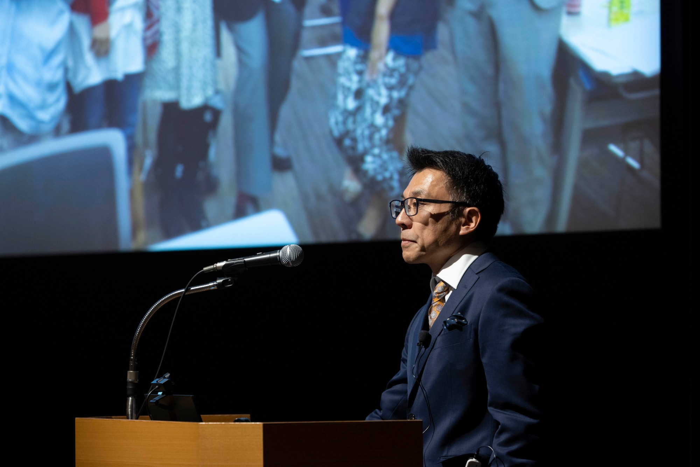
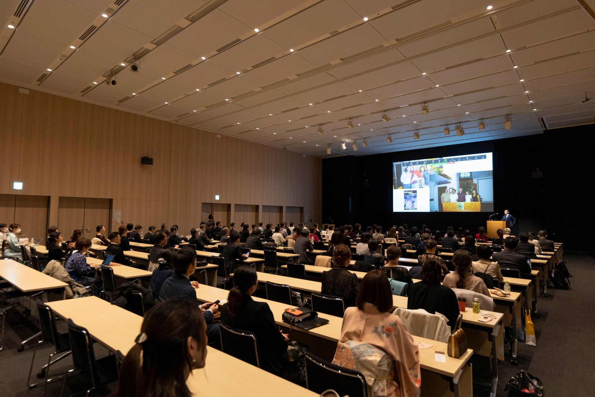


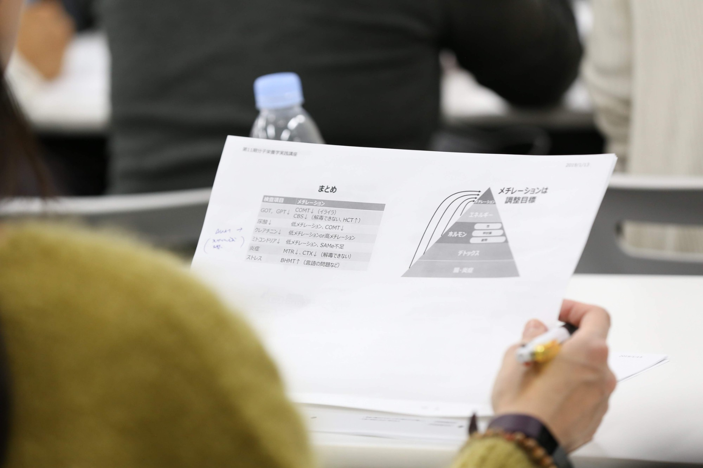


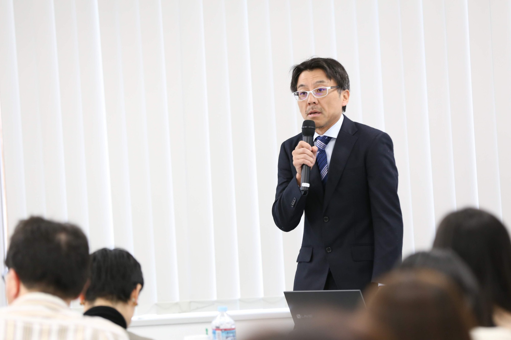

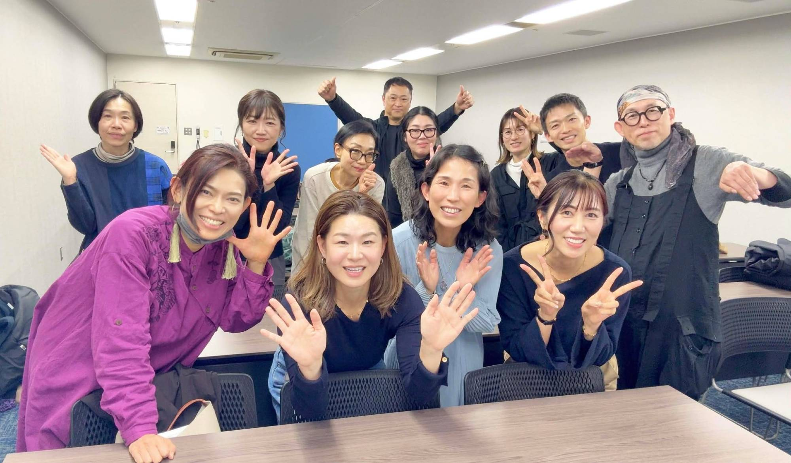


講義・グループワーク・会場の様子（累計3,542名が学んだ現場）
研究会の講師には、カウンセラーとして自分のフィールドを築いた人が並ぶ。あなたのロールモデルになる。
まごめ じゅん
分子栄養学カウンセラー。「ビタミンアカデミー」運営。理論的考察と独自の視点で、圧倒的人気のセミナー講師に。情報発信 × 個別カウンセリング
松崎 茂利
認定カウンセラー。「ディアらぼ」運営でX5万人超。低血糖・副腎疲労の専門知識とエビデンスに基づく発信で支持を集める。発信 × 栄養カウンセリング
田中 裕規
「断食メガネ」。認定指導カウンセラー／1級断食指導者として18,000人以上を指導。著書多数。ファスティング × 分子栄養学
井上 みどり
認定指導カウンセラー。自身の副腎疲労・子供時代の不調を改善した経験を活かし、学習から独立まで初心者を伴走。個別指導 × 独立サポート
諦めなくていい不調を、
諦めてきた人がいる。
それが変わるのは、知識が広まるときだけだ。
あなたは治す人ではない。だが、あなたが「なぜ」を伝えることで、一人の人生が動き始める。その最初のドミノを倒す人になる。
気づきを広げる人が、医療の入口をつくる。